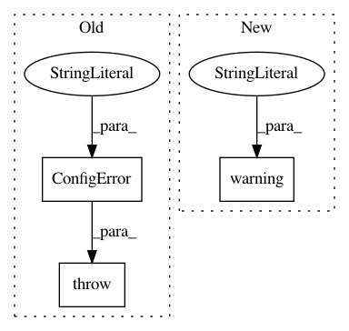

30fbe7d024c86566a2178d03f4e8bbf388b868fa,anvio/workflows/phylogenomics/__init__.py,PhylogenomicsWorkflow,sanity_checks,#PhylogenomicsWorkflow#,82
Before Change
def sanity_checks(self):
if not self.get_rule_param("anvi_get_sequences_for_hmm_hits", "--gene-names"):
raise ConfigError("You must provide a list of genes to use for the phylogenomics. \
To do so, please use the "--gene-names" parameter of rule anvi_get_sequences_for_hmm_hits.")
if not self.get_rule_param("anvi_get_sequences_for_hmm_hits", "--return-best-hit"):
run.warning("You changed the value for --return-best-hit for the rule anvi_get_sequences_for_hmm_hits \
to something other than the default value, which is "true", while we allow you to do it \
After Change
def sanity_checks(self):
if not self.get_rule_param("anvi_get_sequences_for_hmm_hits", "--gene-names"):
run.warning("You did not provide a list of genes to use for phylogenomics. This is ok and things might work \
but we wanted to make sure this is intended. If you change your mind, you can provide a list of genes \
by using the "--gene-names" parameter of rule anvi_get_sequences_for_hmm_hits.")
if not self.get_rule_param("anvi_get_sequences_for_hmm_hits", "--return-best-hit"):
run.warning("You changed the value for --return-best-hit for the rule anvi_get_sequences_for_hmm_hits \
to something other than the default value, which is "true", while we allow you to do it \
In pattern: SUPERPATTERN
Frequency: 3
Non-data size: 3
Instances
Project Name: merenlab/anvio
Commit Name: 30fbe7d024c86566a2178d03f4e8bbf388b868fa
Time: 2019-10-18
Author: alon.shaiber@gmail.com
File Name: anvio/workflows/phylogenomics/__init__.py
Class Name: PhylogenomicsWorkflow
Method Name: sanity_checks
Project Name: merenlab/anvio
Commit Name: bfd0342e40c91c50de44e7659995c53de5d9fea5
Time: 2019-07-17
Author: a.murat.eren@gmail.com
File Name: anvio/tables/hmmhits.py
Class Name: TablesForHMMHits
Method Name: __init__
Project Name: merenlab/anvio
Commit Name: 67ebbfa12cf92c303bef84efdea0fd3a07a1f98e
Time: 2019-09-26
Author: kiefl.evan@gmail.com
File Name: anvio/splitter.py
Class Name: LocusSplitter
Method Name: process